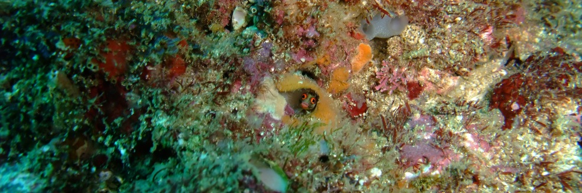
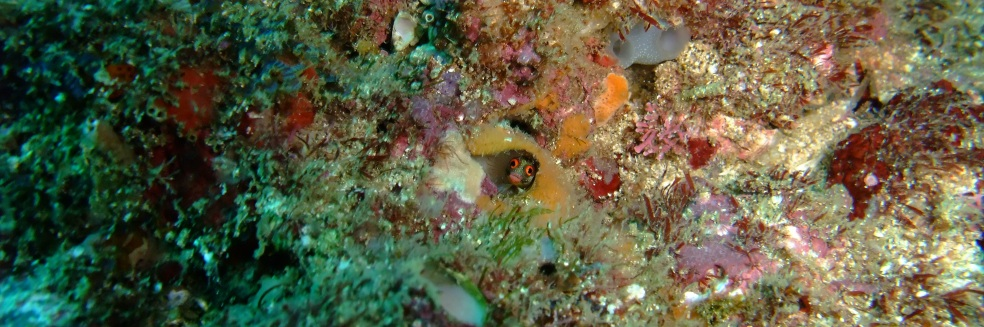

Presentation
Welcome to my personal web Page.
It is designed mainly for my family, friends and my personal use with the intention to be my web starting point and reccord hobbies
and other things. As hobby I have fotography, scuba diving, bonsai, ichthyology and golf.
Please feel free to browse and leave a comment.
Keep my contacts if you see I could assist you anyway
Latest Projects


Executive Profile
Career in Technology and Information Systems and Consulting, in high technology-driven companies,
evolving from technical coordination and project management into steering area, teams and business.
Solid competences in Business Unit and IT Management, responsible for coordinating and developing both
commercial and technical business, operations, business plan, P&L, forecasting, baselining, building and
development of internal and outsourced teams with strong focus in customer relation management.
Professional Presentation
Sentences
"If you're in a bad situation, don't worry it'll change. If you're in a good situation, don't worry it'll change."
"Turn your face towards the sun and the shadows will fall behind you."
"Mais importante do que a vontade de vencer é a coragem de começar."